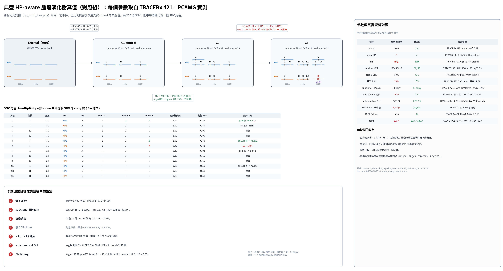

模擬出來的 long read bulk 資料要有人相信，前提是 hp_truth_tree.png 這棵真值樹本身合理。今天把「先證明真值樹合理」訂為最優先目標，再做模擬器。
/big8_disk/boyu114/benchmark_data/（T2T_Q100、GIAB、SEQC2、COLO829、CASTLE）；在 chrX 驗證 GIAB v5.0q 的 GT 順序。SUMMARY.md。| 事件 | 原樹設定 | 真實資料實測 | 判定 |
|---|---|---|---|
| ① 低 purity | 0.40 | TRACERx tumour 中位 0.39；PCAWG 17% ≤ 0.40；本機 HCC1395 實測 0.32–0.51 | 在範圍內 |
| ② subclonal HP gain | HP1 +1 | TRACERx 91% tumour 有，其中 91% 只差 1 copy；HG008 有 subclonal 2+1 gain | 在範圍內 |
| ③ 突變遺失 | 20% SNV | TRACERx 每 tumour 中位 0%，最大 11.7%；PCAWG 只有代理值 | 偏高 |
| ④ 低 CCF clone | C3 CCF 0.10 | TRACERx 單區域 8.4% subclone ≤ 0.15；PCAWG 0.5%（受偵測下限影響） | 尾端 |
| ⑤ HP 拆分 | 每個 SNV 屬 HP1 或 HP2 | HG008 2,208:2,385；HCC1395 ONT 14,443:14,120 | 支持 |
| ⑥ cnLOH | seg D subclonal | TRACERx 72% tumour 有 subclonal cnLOH；HG008 只有 clonal | 在範圍內 |
| ⑦ CN timing | gain 區 early 0.5 | PCAWG 中位 0.28（IQR 0.18–0.40） | 偏高 |
| 樹形 | 4 clone、分岔 | TRACERx 單區域 73% 直線；PCAWG ≥ 3 subclone 只佔 2.3% | 上尾 |

原樹的每個事件都真實存在，但全部塞進 100 個 SNV，密度遠高於一般腫瘤。所以報告要兩棵樹一起呈現：原樹檢查方法在極端情況下的表現，典型樹代表一般腫瘤。這也決定了後面模擬器的隨機樹要從 TRACERx 實際樹抽，而不是手寫。
session 91a5283a 10-25 10:31–14:57。subagent：T2T-Q100、GIAB HG008、SEQC2/COLO829、7 類事件文獻、TRACERx citation check（19 條 14✅5⚠️）、PCAWG/其他 citation check（50 條 38✅12⚠️）、TRACERx 421 資料統計、PCAWG 資料統計。TRACERx 下載 491 MB（Zenodo 7822002、7649257），PCAWG 1.2 GB（ICGC 25K open bucket、CliPP）。使用者中途質疑 switch error 與真值樹的關係，之後把目標記進 memory truth-tree-plausibility-goal。
research/simulation_pipeline_research/truth_evidence_2026-10-25/README.mdresearch/simulation_pipeline_research/truth_evidence_2026-10-25/SUMMARY.mdresearch/simulation_pipeline_research/truth_evidence_2026-10-25/01_T2T_Q100_HG002.mdresearch/simulation_pipeline_research/truth_evidence_2026-10-25/02_GIAB_HG008_somatic.mdresearch/simulation_pipeline_research/truth_evidence_2026-10-25/03_SEQC2_COLO829_celllines.mdresearch/simulation_pipeline_research/truth_evidence_2026-10-25/04_event_evidence_real_tumors.mdresearch/simulation_pipeline_research/truth_evidence_2026-10-25/05_tracerx_citation_check.mdresearch/simulation_pipeline_research/truth_evidence_2026-10-25/06_pcawg_other_citation_check.mdtools/download_benchmark_small.shtools/hg008_truth_tree_stats.pytools/tracerx_export.Rtools/tracerx_event_stats.pytools/pcawg_event_stats.pytools/pcawg_clipp_ccf.pytools/typical_truth_tree.pytools/draw_typical_truth_tree.pylab_report/2026-10-25_hg008_truth_tree_plausibility/lab_report/2026-10-25_tracerx_event_stats/lab_report/2026-10-25_pcawg_event_stats/lab_report/2026-10-25_typical_truth_tree/research/simulation_pipeline_research/figures/typical_truth_tree.png/big8_disk/boyu114/benchmark_data/commits 4c9338a 68b9b07 ac226c3 90eb060 0949eb9 a0b66be a98657blongbulksim v0.1，並讓它從 TRACERx 421 的真實樹抽隨機樹完成要驗證 HP-aware PhyClone，需要能大量產生「帶 HP 與 read 共現真值」的 long read bulk 資料。前一天的調查確認沒有現成工具做到這件事。
longbulksim v0.1：讀 HP-aware clone tree 的 YAML spec，在 molecule 層抽樣，輸出 PhyClone 輸入、HP 拆分計數、SNV pair 共現表，真值另放 truth/。read 跨度用 tools/measure_read_span.py 從真實 ONT 量。longbulksim.random_tree：每個 spec 取一棵 TRACERx 421 的單區域真實樹（拓樸、CCF、purity、各 clone 突變比例），CN 事件取自同一個 tumour。| 指標 | cohort 來源 | cohort | 生成 | 判定 |
|---|---|---|---|---|
| 直線樹比例 | TRACERx 單區域 | 0.73 | 0.729 | 吻合 |
| purity 中位 | TRACERx 區域 | 0.41 | 0.41 | 吻合 |
| clone 數中位 | TRACERx 單區域 | 5 | 3（merge 前 5） | merge 刻意造成 |
| 2:1 區 early 比例 | PCAWG | 0.28 | 0.24 | 在 IQR 內 |
| 遺失比例 Q90 | TRACERx 嚴格下限 | 0.014 | 0.031 | 高於下限 |
模擬器的樹不再是手寫的，而是從真實腫瘤抽出來，這回應了上一項「真值樹要合理」的要求。之後的方法比較（下面第 5 項）就用這批隨機樹。
session ff86f0e0 10-25 14:58–15:50。使用者問為何開 branch，決定直接 commit 到 main。藍圖 TSV 約 1 MB 放在 package 的 data/。
longbulksim/longbulksim/model.pylongbulksim/longbulksim/sample.pylongbulksim/longbulksim/simulate.pylongbulksim/longbulksim/random_tree.pylongbulksim/README.mdlongbulksim/DECISIONS.mdlongbulksim/specs/stress.yamltools/measure_read_span.pytools/tracerx_blueprints.pytools/random_tree_validation.pypython3 tools/random_tree_validation.py lab_report/2026-10-25_random_tree_generator --n 1000 --run 20lab_report/2026-10-25_random_tree_generator/commits 8e6fdca 2d47cf6 b9dd860前一天 PhyClone 在壓力樹上有三個失敗：C1／C2 被合併（P1）、直線和分岔拓樸約 4:6 分不開（P2）、cnLOH 遺失的 s10 被併進 C3（P3）。老闆指示研究只針對單一 bulk 樣本，所以要看 HP 特徵能修好哪一個。
HP_EXTENSION_DESIGN.md：A1＝用 HP 拆分後的 ref／alt 計數；A2＝再加上 segment 的 subclonal CN 狀態與比例 φ。tools/phyclone_hp.py；模擬器多輸出 data_hp.tsv 與 segments.tsv。| 問題 | base | A1 | A2 |
|---|---|---|---|
| P3：s10 被併進 C3（真值 0） | 0.92–1.00 | 0–0.67，有假 clone | 0.00–0.01 |
| P3：s10 回到 truncal（真值 1） | 0 | 0 | 0.80–0.86 |
| truncal clone CCF（真值 1.00） | 0.87–0.90 | 0.91–0.94 | 0.97–1.00 |
| P1：C1／C2 合併（真值 0） | 1.00 | 1.00 | 1.00 |
| P2：直線樹比例（真值 0） | 0.38–0.44 | 0.34–0.45 | 0.43–0.47 |
A1／A2 只改單一 SNV 的 likelihood，帶不出拓樸資訊，所以 P2 要靠 read 共現（第 4 項的 C4）。A2 和 C4 分工：A2 處理突變遺失，C4 處理拓樸。
session e623fed9 10-25 08:26–09:31。待決的 4 個問題記在 memory hp-extension-open-questions。資料 seed 1 的 base 結果和 10-24 逐 byte 相同。
research/phyclone_research/HP_EXTENSION_DESIGN.mdtools/phyclone_hp.pytools/hp_truth_tree_to_phyclone.pylab_report/2026-10-24_hp_truth_tree_phyclone/README.mdlab_report/2026-10-25_hp_a1a2_vs_base/lab_report/2026-10-24_hp_truth_tree_phyclone/two_sample/A1／A2 修不了拓樸（P2）。同一條 long read 上兩個突變是否一起出現，直接說明它們是祖孫還是分支關係。加入這個 pairwise 項能不能分出直線與分岔？
tools/phyclone_pairs.py：依樹上兩個 clone 的關係（same／祖孫／分支），對每條跨越兩個 SNV 的 read 給 likelihood，錯配機率 ε = 0.01。C4_ROBUSTNESS_PLAN.md，交給新 session。| 方法 | 直線樹 posterior（真值 0） | s10 在 C3（真值 0） |
|---|---|---|
| base | 0.39–0.48 | 約 1.0 |
| base＋C4 | 0.000–0.002 | 約 1.0 |
| A2＋C4 | 0.000–0.002 | 0.01–0.04 |
少量 pair 就夠，是因為每條矛盾的 read 代價很高（log ε ≈ −4.6）。這也是風險：真實資料的 HP 錯標與定序錯誤會產生假矛盾，可能讓 C4 很有信心地選錯樹，所以接著做穩健性測試（記錄層第 9 項）。C2 和 C4 的 SNV 分在不同 HP，沒有 read 能跨越，這是設計樹本身的限制。
session ff86f0e0 10-25 19:36–20:39。第一輪 12 個 C4 run 因 worker 未安裝重跑。trace.h5 不進 git（.gitignore 新增 lab_report/**/trace.h5）。
tools/phyclone_pairs.pytools/test_phyclone_pairs.pytools/phyclone_hp.pyresearch/phyclone_research/HP_EXTENSION_DESIGN.mdresearch/phyclone_research/C4_ROBUSTNESS_PLAN.mdlab_report/2026-10-25_c4_pair_term_stress/commits ed7a136 1ccbecb壓力樹只有一棵。在「像真實腫瘤」的單一 bulk 樣本上，原版 PhyClone 表現如何？HP 拆分計數（A1、A2）在一般情況下有沒有用？
longbulksim.random_tree 產生 40 個 spec，各跑原版 PhyClone、A1、A2。tools/eval_random_tree_phyclone.py 算 ARI、V-measure、relation accuracy、CCF 誤差、clone 數誤差；配對 bootstrap 10,000 次算 CI。| 指標 | base 中位 | A1 中位 | A2 中位 | A1 − base | A2 − base |
|---|---|---|---|---|---|
| ARI | 0.218 | 0.357 | 0.441 | +0.053 [+0.027, +0.085] | +0.063 [+0.033, +0.100] |
| V-measure | 0.203 | 0.264 | 0.349 | +0.047 [+0.026, +0.070] | +0.056 [+0.032, +0.084] |
HP 拆分計數在一般腫瘤上也有用，但幅度小。A2 − A1 約 +0.01 ARI，是「φ 已知」能帶來的上限。clone 合併與拓樸錯誤大多還在，要靠 C4。
session ff86f0e0 10-25 15:50–19:34。核對報告時把「全部都低估」改成「32 個中有 27 個」。
tools/eval_random_tree_phyclone.pytools/summarize_random_tree_methods.py.gitignorebash lab_report/2026-10-25_random_tree_phyclone_baseline/run_all.sh 40 25bash lab_report/2026-10-25_random_tree_phyclone_baseline/run_hp.sh 40lab_report/2026-10-25_random_tree_phyclone_baseline/commit a1be32c模擬器假設每個 SNV 屬於一條 HP、85% 的 read 有 phasing、每對 SNV 有固定數量跨越 read。這些假設在真實 ONT 資料上成立嗎？
t50_n00 CRAM（tagged CRAM 保留在 /big8_disk/boyu114/hcc1395_hp_split/）。phasing 比例和 HP 深度的假設都符合真實資料，支持真值樹事件 ⑤ HP 拆分與 ② HP gain。但 read 共現要依 SNV 間距和 depth 抽樣，不能固定給 80 條。HCC1395 突變負荷偏高，一般腫瘤的近距離 pair 會更少。
t50_n00）。session 91a5283a 10-25 14:27–14:53。使用者確認目前只是先加入 HP1／HP2 特徵，germline 或 somatic haplotag 之後再決定（記進 memory hp-extension-open-questions）。
tools/hcc1395_hp_split_prepare.shtools/hcc1395_hp_split.pypython3 -I tools/hcc1395_hp_split.py /big8_disk/boyu114/hcc1395_hp_split/tagged_t50_n00.cram lab_report/2026-10-25_hcc1395_hp_splitlab_report/2026-10-25_hcc1395_hp_split//big8_disk/boyu114/hcc1395_hp_split/tagged_t50_n00.cramcommit 42449d7「當天新增或修改的檔案」那段是 find | sed | sort | head -100；檔案超過 100 個時 sort 收到 SIGPIPE，配上 pipefail 讓整支腳本停在 traces.md 中間，沒有產生 transcript.txt，也沒有設定游標 pending。
|| true。為什麼：10-24 手動設計的 hp_truth_tree.png 原本被當作要用來產生模擬資料的真值樹。今天的文獻 subagent 指出它把 7 類事件塞進 100 個 SNV，密度遠高於真實腫瘤，建議標為壓力測試。做了什麼：兩個 subagent 逐條核對 04 檔的文獻數字（TRACERx 19 條 14✅5⚠️；PCAWG 與其他 50 條 38✅12⚠️），13:40 把修正寫回 04 檔。主要修正：(1) C3 CCF 0.10 在 nrpcc≈40 時略高於 PCAWG 偵測下限（約 0.075），不是原本說的「低於」；(2) 突變遺失 13% 的分母是 subclonal 突變，20/100 的分母是全部 SNV，粗估典型值只約 4%，所以 20% 是壓力值；(3) 62% MSAI 是 mirrored 事件，不能支持單一 allele gain，改引 Watkins 18%；(4) CONIPHER「預設 coverage 400、purity 0.7–0.9」只是函式預設。結果：原樹定位改成「由真實事件組成的壓力測試樹」，另設計典型樹當對照（呈現層第 1 項）。狀態：已 commit（ac226c3、90eb060）。
research/simulation_pipeline_research/truth_evidence_2026-10-25/04_event_evidence_real_tumors.mdresearch/simulation_pipeline_research/truth_evidence_2026-10-25/05_tracerx_citation_check.mdresearch/simulation_pipeline_research/truth_evidence_2026-10-25/06_pcawg_other_citation_check.md為什麼：真值樹事件 ① 設 purity 0.40，要知道本機實際資料的 purity 範圍；tX_nY 標籤是 design tumor fraction，不是實測值。做了什麼：tools/seqc2_hcc1395_purity.py 在 SEQC2 v1.2.1 的 CN=2 somatic SNV 位點（約 10,000 個）做 pileup，估計每個 subsample 的細胞 purity，再用 ploidy 2.85 換回 DNA 比例。結果：ONT 系列 t10_n40 0.153、t20_n30 0.321、t30_n20 0.513、t40_n10 0.737（nominal 0.2/0.4/0.6/0.8）；換回 DNA 比例後和 nominal 差 < 0.006，反推 ploidy 2.75–2.91，與 SEQC2 論文 2.85 一致。ONT 與 ONT_Dorado 兩個系列差 0.003–0.006。t00_n25 有 0.4–0.7% 背景訊號，原因未分辨。所以 0.40 介於 t20_n30 與 t30_n20 之間，在本機資料範圍內；給 PhyClone 的 tumour_content 要用細胞 purity。使用者也問了為何選 HCC1395 與 ONT／ONT_Dorado 差異，答案寫進 tumor_sample.md。狀態：已 commit（68b9b07）。
tools/seqc2_hcc1395_purity.pytumor_sample.mdlab_report/2026-10-25_seqc2_hcc1395_measured_purity/為什麼：C4 每條矛盾 read 罰 log ε，真實資料的 HP 錯標、phasing switch、定序錯誤可能讓它選錯樹。照 C4_ROBUSTNESS_PLAN.md 在新 session 實作。做了什麼：longbulksim 升到 v0.2，加 mistag_rate、switch_rate_per_mb、base_error 三個參數（錯誤率 0 時輸出和 v0.1 逐位相同，有 sha256 測試；測試 18→27 個全過）。校正：base_error 在 HCC1395BL normal CRAM 的 37,321 個位點實測 0.40%（p99 5.3%）；switch 用 LongPhase 論文 0.13–0.16% × het SNP 約 620/Mb ≈ 1/Mb；mistag 用 HCC1395 split-HP 2.4–2.5% 代理。第 1 階段 ×10、base＋C4、ε=0.01 跑 24 個 run；第 2 階段跑 real 條件與 ε 掃描 24 個 run，再補 9 個。結果：錯誤直線樹在所有錯誤條件下都 ≤ 0.001；e0 的 3 個 run 和舊實驗逐位相同。新失效模式：base_error 3% 時 clone 被拆成 4–8 個（真值 4），因為同一 clone 的 10/01 read 在 same 假設下每條罰 log ε；ε 提到 0.1 時診斷量 same_vs_split 轉正。計畫中「整條 read 錯標會產生 n11」的預期不成立（錯標 read 移到另一條 HP 的表裡成為 n00，不建模）。狀態：補跑的 9 個 run 在掃描時仍在跑；未 commit，lab report README 未寫。
longbulksim/longbulksim/model.pylongbulksim/longbulksim/sample.pylongbulksim/longbulksim/simulate.pylongbulksim/tests/test_errors.pytools/measure_snv_base_error.pytools/summarize_c4_robustness.pytools/c4_pair_evidence.pylab_report/2026-10-25_c4_robustness/為什麼：前一晚 23:00 的 daily-log 排程跑到午夜後才完成。做了什麼：掃描 10-23 23:00 到 10-24 23:00，寫 candidates.json，複製兩張圖到 daily/figures/2026-10-24/，用 build_log.py 產生 JSON 並渲染。結果：2026-10-24 日誌呈現 5 項、記錄 4 項。狀態：完成；日誌 repo 未 push。
daily/.data/2026-10-24.json